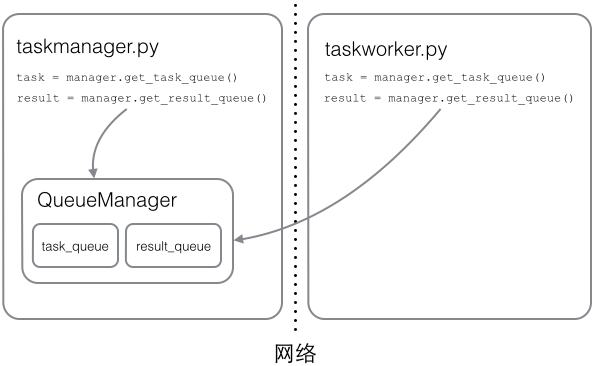

13-5 分布式进程
在Thread和Process中，应当优选Process，因为Process更稳定，而且，Process可以分布到多台机器上，而Thread最多只能分布到同一台机器的多个CPU上。
Python的multiprocessing模块不但支持多进程，其中managers子模块还支持把多进程分布到多台机器上。一个服务进程可以作为调度者，将任务分布到其他多个进程中，依靠网络通信。由于managers模块封装很好，不必了解网络通信的细节，就可以很容易地编写分布式多进程程序。
举个例子：如果我们已经有一个通过Queue通信的多进程程序在同一台机器上运行，现在，由于处理任务的进程任务繁重，希望把发送任务的进程和处理任务的进程分布到两台机器上。怎么用分布式进程实现？
原有的Queue可以继续使用，但是，通过managers模块把Queue通过网络暴露出去，就可以让其他机器的进程访问Queue了。
我们先看服务进程，服务进程负责启动Queue，把Queue注册到网络上，然后往Queue里面写入任务：
# taskmanager.py
import random, time, Queue
from multiprocessing.managers import BaseManager
# 发送任务的队列:
task_queue = Queue.Queue()
# 接收结果的队列:
result_queue = Queue.Queue()
# 从BaseManager继承的QueueManager:
class QueueManager(BaseManager):
pass
# 把两个Queue都注册到网络上, callable参数关联了Queue对象:
QueueManager.register('get_task_queue', callable=lambda: task_queue)
QueueManager.register('get_result_queue', callable=lambda: result_queue)
# 绑定端口5000, 设置验证码'abc':
manager = QueueManager(address=('', 5000), authkey='abc')
# 启动Queue:
manager.start()
# 获得通过网络访问的Queue对象:
task = manager.get_task_queue()
result = manager.get_result_queue()
# 放几个任务进去:
for i in range(10):
n = random.randint(0, 10000)
print('Put task %d...' % n)
task.put(n)
# 从result队列读取结果:
print('Try get results...')
for i in range(10):
r = result.get(timeout=10)
print('Result: %s' % r)
# 关闭:
manager.shutdown()
请注意，当我们在一台机器上写多进程程序时，创建的Queue可以直接拿来用，但是，在分布式多进程环境下，添加任务到Queue不可以直接对原始的task_queue进行操作，那样就绕过了QueueManager的封装，必须通过manager.get_task_queue()获得的Queue接口添加。
然后，在另一台机器上启动任务进程（本机上启动也可以）：
# taskworker.py
import time, sys, Queue
from multiprocessing.managers import BaseManager
# 创建类似的QueueManager:
class QueueManager(BaseManager):
pass
# 由于这个QueueManager只从网络上获取Queue，所以注册时只提供名字:
QueueManager.register('get_task_queue')
QueueManager.register('get_result_queue')
# 连接到服务器，也就是运行taskmanager.py的机器:
server_addr = '127.0.0.1'
print('Connect to server %s...' % server_addr)
# 端口和验证码注意保持与taskmanager.py设置的完全一致:
m = QueueManager(address=(server_addr, 5000), authkey='abc')
# 从网络连接:
m.connect()
# 获取Queue的对象:
task = m.get_task_queue()
result = m.get_result_queue()
# 从task队列取任务,并把结果写入result队列:
for i in range(10):
try:
n = task.get(timeout=1)
print('run task %d * %d...' % (n, n))
r = '%d * %d = %d' % (n, n, n*n)
time.sleep(1)
result.put(r)
except Queue.Empty:
print('task queue is empty.')
# 处理结束:
print('worker exit.')
任务进程要通过网络连接到服务进程，所以要指定服务进程的IP。
现在，可以试试分布式进程的工作效果了。先启动taskmanager.py服务进程：
$ python taskmanager.py
Put task 3411...
Put task 1605...
Put task 1398...
Put task 4729...
Put task 5300...
Put task 7471...
Put task 68...
Put task 4219...
Put task 339...
Put task 7866...
Try get results...
taskmanager进程发送完任务后，开始等待result队列的结果。现在启动taskworker.py进程：
$ python taskworker.py 127.0.0.1
Connect to server 127.0.0.1...
run task 3411 * 3411...
run task 1605 * 1605...
run task 1398 * 1398...
run task 4729 * 4729...
run task 5300 * 5300...
run task 7471 * 7471...
run task 68 * 68...
run task 4219 * 4219...
run task 339 * 339...
run task 7866 * 7866...
worker exit.
taskworker进程结束，在taskmanager进程中会继续打印出结果：
Result: 3411 * 3411 = 11634921
Result: 1605 * 1605 = 2576025
Result: 1398 * 1398 = 1954404
Result: 4729 * 4729 = 22363441
Result: 5300 * 5300 = 28090000
Result: 7471 * 7471 = 55815841
Result: 68 * 68 = 4624
Result: 4219 * 4219 = 17799961
Result: 339 * 339 = 114921
Result: 7866 * 7866 = 61873956
这个简单的Manager/Worker模型有什么用？其实这就是一个简单但真正的分布式计算，把代码稍加改造，启动多个worker，就可以把任务分布到几台甚至几十台机器上，比如把计算n*n的代码换成发送邮件，就实现了邮件队列的异步发送。
Queue对象存储在哪？注意到taskworker.py中根本没有创建Queue的代码，所以，Queue对象存储在taskmanager.py进程中：

而Queue之所以能通过网络访问，就是通过QueueManager实现的。由于QueueManager管理的不止一个Queue，所以，要给每个Queue的网络调用接口起个名字，比如get_task_queue。
authkey有什么用？这是为了保证两台机器正常通信，不被其他机器恶意干扰。如果taskworker.py的authkey和taskmanager.py的authkey不一致，肯定连接不上。
小结
Python的分布式进程接口简单，封装良好，适合需要把繁重任务分布到多台机器的环境下。
注意Queue的作用是用来传递任务和接收结果，每个任务的描述数据量要尽量小。比如发送一个处理日志文件的任务，就不要发送几百兆的日志文件本身，而是发送日志文件存放的完整路径，由Worker进程再去共享的磁盘上读取文件。